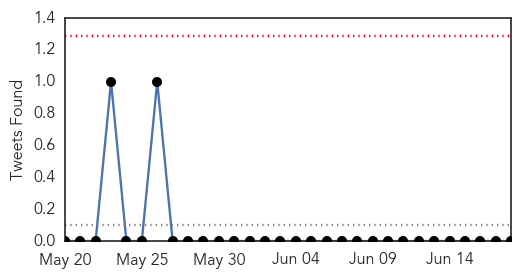

West Nile Virus
30-Day Web Trend
5 alerts, 7 warnings

30-Day Twitter Trend
0 alerts, 0 warnings

Article Locations

Article Confidences

Top Articles:
- 0.997
- Suffolk: First bird this year tests positive for West Nile
- 0.989
- Mosquitos in 5 Colorado counties tested positive for West Nile Virus already this season
- 0.976
- Chikungunya Virus moves all the way from Kerala, to the Caribbean, and now the US
- 0.848
- Precautions urged as mosquito season revs up
- 0.769
- Chadrad.com
- 0.732
- More Mosquitoes, More Disease: Protect Horses & Other Animals
- 0.732
- Another mosquito-borne virus heads toward U.S., possibly Texas
Top Tweets:
-
No tweets found for Jun 18, 2014
Influenza
30-Day Web Trend
0 alerts, 0 warnings

30-Day Twitter Trend
0 alerts, 0 warnings

Article Locations

Article Confidences
Top Articles:
- 0.995
- Human infection with avian influenza A(H7N9) virus – update
- 0.993
- Summer Flu on the Rise in Bering Strait and Across Alaska
- 0.933
- Vaccination isn't just for kids – a guide for over-65s
- 0.927
- Avian Flu Scan for Jun 18, 2014
- 0.867
- Bird Flu 'Danger Zones' Mapped
- 0.633
- Bird flu scare for Bangladesh, West Bengal
Top Tweets:
-
No tweets found for Jun 18, 2014